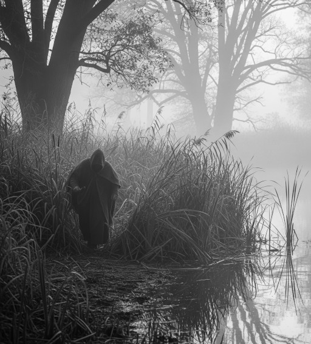

Sedelská pravda
Fakta, názory a konspirační teorie bez repelentu
Fakta, názory a konspirační teorie bez repelentu
Dnes brzy ráno dnes došlo k děsivému nálezu: poblíž rybníka, jen pár metrů od břehu, byla nalezena lidská ruka. Objev učinila dvojice táborníků během ranního běhu. „Mysleli jsme, že je to gumová hračka,“ popsali krátce poté, „ale pak jsme si všimli krve.“
Sedelská obecní policie nález potvrdila a oblast byla okamžitě uzavřena. Ruka byla ohledána forenzními experty, kteří zjistili, že jde o pravou ruku dospělého člověka a je v dobrém stavu. Podle prvotních informací se nejedná o žádný starý nález, ale o čerstvý případ. Podle našeho informátora nenesla žádné známky zranění, které by nasvědčovaly násilnému činu. „Vypadá to, že byla odříznuta čistě a s chirurgickou precizností,“ uvedl náš zdroj z vyšetřovacího týmu.
Další šok přišel, když se ukázalo, že ruka nikomu v okolí nechybí. Její majitel se zatím nepřihlásil a policie spekuluje, že by mohla patřit panu Klečkovi, který před několika týdny zmizel z obce. „Je to jedna z možností, ale zatím nemáme žádné důkazy,“ uvedl policejní mluvčí. Vzhledem k čerstvosti nálezu se to však zdá nepravděpodobné, a tak policie zvažuje i další varianty. „Může jít o nějaký podivný žert, nebo o součást většího případu,“ dodal mluvčí.
Tím ale záhada nekončí. Podle svědků se v noci v okolí rybníka pohybovala postava v plášti, která mohla být pachatelem nebo svědkem. „Viděl jsem ji, ale byla tak rychlá, že jsem si ani nevšiml, jestli měla ruce,“ uvedl jeden z místních rybářů.
Obec Sedlo se dočkala historického okamžiku – po letech, kdy si místní museli kvůli každému kazu objednávat taxi nebo poprosit souseda o svezení, se do obce opět stěhuje zubař. S velkou radostí ho vítáme a přinášíme vám s ním krátký rozhovor.
Přestože pan Klečka je nezvěstný více jak měsíc, je možné, že ruka přece jen patří jemu. Policie však pracuje s více variantami. Ostatně pan Klečka není jediným, kdo v Sedle v poslední době zmizel. Připomeňme si například případ pana Mareše u starých pohraničních bunkrů nebo náhlý odjezd pana Hroně, který popíjející pivo na zahrádce Sedelské hospody prohlásil, že „jede na chvíli do Hradce“. A od té doby ho nikdo neviděl. Samozřejmě se nabízí i možnost, že ruka patří někomu z daleka, kdo se do Sedla dostal náhodou.
„Je to zvláštní, ale v Sedle se ztrácí lidé jako ponožky v pračce,“ říká náš redaktor. „A teď máme ruku, která může patřit komukoli. Možná je to jen nějaký podivný žert, ale kdo ví?“
Pane doktore, vítejte v Sedle! Co vás sem přivedlo?
Popravdě? Ticho. Po dvaceti letech v městské ordinaci, kde jsem slyšel víc klaksonů než „děkuji“, je Sedlo jako balzám na nervy – a dásně.
Převzal jste ordinaci po dlouholetém působení MDDr. Vrtáka. Jaké to pro vás bylo?
Vrták byl legenda. Dokázal dostat i toho nejnezodpovědnějšího pacienta na preventivku, a tak měl naprosto dokonalou zubní kartotéku. Když jsem viděl ty jeho záznamy, myslel jsem, že jsem se ocitl v nějakém zubařském ráji. Na toho se bude těžko navazovat.
Máte už objednané první pacienty?
Ano, lidé se zapisují rychle. Jeden pán chtěl preventivku, druhý jen "ukázat jedničky", a jeden mě žádal o vytetování zubu na rameno, což jsem musel odmítnout. (smích)
Máte nějakou radu pro naše čtenáře, jak nezapomenout na preventivní prohlídky?
Nejlepší je si nastavit připomínku v mobilu, nebo ještě lépe – si nechat vytetovat datum poslední prohlídky na zub! Ale vážně – prevence je základ. Když už vás najdu jen podle osmiček, je na opravu trochu pozdě.
Říká se, že zuby každého člověka jsou unikátní. Je to pravda?
Stoprocentně. Každý chrup je jako otisk prstu – tvar, postavení, i počet výplní. Dokonce i materiál plomb se může lišit. Kdybyste si prohlíželi chrup pod lupou, poznáte člověka lépe než z občanky.
Chystáte v ordinaci nějaké novinky?
Bude zde moderní rentgen, možnost lokálního znecitlivění čerstvým chladivým větrem z okolních luk a zdarma kartáček za každou návštěvu bez kazu. Uvažuji i o „věrnostní kartě“ – po devíti plombách desátá zdarma.
Od příštího týdne bude ordinace MDDr. Drtě otevřena každé pondělí, středu a pátek. Ordinac Doporučujeme rezervaci předem – a pořádně si vyčistit zuby. Opravdu, říkal, že si všimne všeho.
Dobrodruh Jedlička se nedávno pokusil překonat světový rekord v přeplavání Atlantiku. Po 62 dnech v moři, desítkách medúzích štípanců a jednom útoku velkého bílého žraloka, se mu to podařilo téměř včas. Téměř.
„Zachytil jsem proud a byl jsem přesvědčený, že mám náskok. Ale pak jsem se snažil otevřít pytlík bonbónů a… no...,“ přiznal vyčerpaný plavec novinářům.
Pan Jedlička se ale nevzdává. „Příště to dám! Už mám vymyšlenou novou strategii – budu jíst bonbóny až cíli!“
Problém je, že na překonání rekordu vsadilo mnoho místních (i nemístních). Kurzy byly lákavé a výhra měla být sladká. Nyní ale vládne spíš hořkost.
„Prohrál jsem dědictví po pratetě,“ hlásil anonymní sázkař z Číměře. Jiní volají po trestním oznámení za „sportovní sabotáž“. Jedlička se nyní musí skrývat před sázkaři, kteří mu vyhrožují, že dokončí to, co bílý žralok začal.
Reportáž Lucie Borešové, Sedlo, srpen 2025
Zprvu to měla být jen krátká terénní návštěva mezi příslušníky západoamerického kmene Šošonů. Nakonec se ale expedice české cestovatelky a antropoložky Jany Kubové proměnila v dramatický příběh o kulturním poznání, přežití v extrémních podmínkách a přátelství.
Výprava začala nadějně. Badatelka dorazila do oblasti Cold Creek Reservation ve Wyomingu, kde se jí podařilo navázat kontakt s místní šošonskou komunitou. „Byli překvapivě otevření a vstřícní,“ uvedla Kubová. „Mluvila jsem s pamětníky, zúčastnila jsem se obřadů a pomáhala s dokumentací tradičních písní.“
Cílem její mise bylo zaznamenat proměny současné šošonské identity a způsobu života v době klimatických změn a digitalizace. Kromě rozhovorů a záznamu orální historie měla s sebou i přenosné laboratoře pro analýzu půdy a vody, aby mohly zaznamenat environmentální otisky života komunity.

Jenže pak přišel sedmý den. A s ním déšť. Ne nějaký příjemný horský deštík, ale vytrvalý monzunový liják, jaký podle místních nepřišel dobrých tisíc let. Potok, který jindy líně protéká tábořištěm pod kopcem, se vzedmul do běsnícího proudu.
„Slyšela jsem, jak se stany začínají bořit, a do dvaceti minut jsem stála v půl metru vody,“ vzpomíná Kubová. „Jediné, co jsem stihla zachránit, byly nahrávky a notýsky. A samozřejmě čelovku.“
Evakuace proběhla narychlo, za asistence místních mladíků, kteří badatelku na improvizovaných kánoích přepravili do vyššího terénu. Zbytek noci strávili v komunitním centru, kde jí starší ženy sušily ponožky nad ohněm.
Navzdory nepřízni počasí výprava přivezla zpět nejen cenný materiál, ale i důležité lidské zkušenosti. „Ve chvíli, kdy jsem stála v bahně po pás a pomáhala stavět nové přístřešky, jsem pochopila, že můj výzkum není jen o sbírání dat,“ říká Kubová. „Je to o vztahu, o důvěře a o tom, že i my se musíme stát součástí.“
Z výpravy si vědkyně přivezla více než jen záznamy a fotky – také nové přátele, pozvání na další obřady
a zcela nový pohled na význam komunitního života.
Ještě několik dní po povodni se v táboře nosila hlína v kotlících, sušily se kožešiny a opravovaly stany. A mezi tím vším pobíhala naše badatelka s diktafonem a lopatou, jakoby tu byla odjakživa.

Jak shrnula starší členka komunity, Mary Little Feather:
„Tato žena přišla s otázkami a odešla jako sestra – jako velmi špinavá sestra.“
Povídá jeden policajt druhému: „Ten rogalo, to je ale strašnej pták. Musel jsem na něj vystřílet celej zásobník, než toho chlapa pustil."
Místní tým FC Sedláci v sobotu přepsal fotbalové dějiny. Před zaplněným hřištěm porazil favorita z dalekého města a připravil tak svým fanouškům nezapomenutelný zážitek. „Nikdo nám nevěřil, ale dokázali jsme to,“ neskrýval nadšení trenér Michal Caudr.
O vítězný gól se postaral mladý útočník XXXXXXX XXXXXXXX, který v 78. minutě prostřelil brankáře soupeře po rychlém protiútoku. „Tohle si budu pamatovat celý život,“ řekl po zápase dojatě.

Fanoušci bouřili ještě dlouho po závěrečném hvizdu a stadionem se nesly chorály a oslavné pokřiky. „Tohle je důkaz, že srdce může porazit sílu,“ shrnul atmosféru Caudr.
Na začátku druhého poločasu došlo k nečekané události: dýmovnice, kterou někdo vhodil na okraj hřiště, nevydávala jen kouř, ale po krátkém syčení explodovala s takovou vervou, že odštěpek trefil nic netušícího fanouška, který si právě rozbaloval sekanou.
„Myslel jsem, že jsem zpátky na vojně,“ komentoval situaci pan A. po ošetření v nemocnici. „Naštěstí jsem jen přišel o kousek ucha a sekaná zůstala celá.“
Dobrý den rád bych upřesnil nějaké info o Sedle za 1. Sedlo není město. Za 2. V Sedle není školka. Za 3. Už vůbec tam není policie. A za 4. Máte v novinách špatně napsaný e-mail. Byl bych rád kdyby se už takové falešné informace nevyskytovaly a kdyby jste tam dávaly vtipnější vtipy. Předem děkuji.
Milý, pozorný čtenáři, velmi nás těší váš zájem o investigativní deník "Sedelská pravda". V zásadě nás vůbec nepřekvapuje, že nemáte o sedelské obecní policii naprosté tušení. Její existenci prozradil až zmiňovaný toaletní skandál, o kterém jste se v našich novinách dočetl. Všechno zlé je pro něco dobré, jak se říká a díky tomuto nevídanému skandálu jsme také zjistili, že jistá Eda Škrláková vede v obci mateřskou školku, o které do této doby také nikdo neměl ani tušení. Bylo to tolik nečekaných objevů, že náš sedelský tiskařský šotek využil situace a pořádně si zařádil. Samozřejmě víme, že Sedlo není město, ale obec, jsme seriózní, dobře informované vydavatelství. Tiskařský šotek dostane přes prsty, aby nám nadále nesahal do raznice na e-mailové adresy.
P.S. Přestaneme žrát suchary, aby ty vtipy za něco stály.
Název: Sedelská pravda
Vydavatel: Sedlo Media Group, s.r.o.
Adresa: Sedlo 47, Česká republika
Email: info@sedelska-pravda.cz
Telefon: +420 123 456 789
Šéfredaktorka: Karolína Bukovská
Výkonný redaktor: Michal Bukovský
Redakce: Lucie a Bohumil Borešovi
Grafická úprava: Michal Bukovský
Tisk: Česká Tiskárna a.s., Nová Bystřice
Datum vydání:
Číslo vydání:
© 2025 Sedlo Media Group. Všechna práva vyhrazena.
Jakékoli šíření obsahu bez svolení vydavatele je zakázáno.